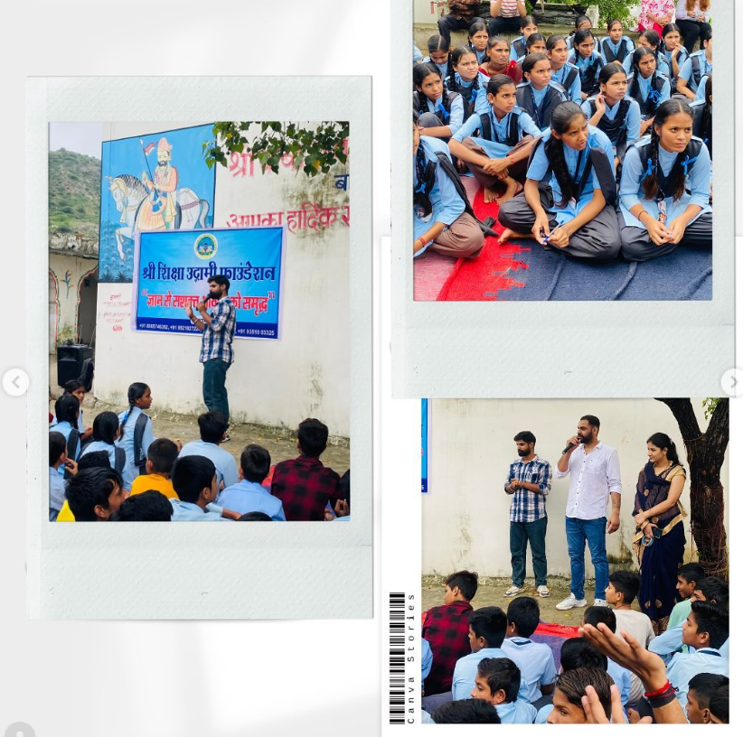

Shri Shiksha Udgami Foundation
Empowering through Education & Development
Empowering through Education & Development
इस इवेंट का मुख्य उद्देश्य युवाओ ंको शिक्षा और करियर के प्रति मार्गदर्शन देना था, जिससे वे सही दिशा में अपना करियर चुन सकें और अपनी शिक्षा की योजना बना सकें। इसके तहत छात्रों को विभिन्न शैक्षणिक विकल्पों, करियर के अवसरों, और स्किल्स डवलपमेंट के बारे में जानकारी दी गई।
✓- छात्रों को उच्च शिक्षा के अवसरों के बारे में जागरूक करना।
✓- विभिन्न करियर विकल्पों और उनके लिए आवश्यक कौशल के बारे में जानकारी देना।
✓- छात्रों को भविष्य की योजनाओ ंके लिए मार्गदर्शन प्रदान करना।
✓इवेंट की शुरुआत सुबह 10 बजे हुई, जिसका उद्घाटन मुख्य अतिथि पार्षद राधिका गुर्जर वार्ड 39 व न्यूज चैनल की संपादक माधवी स्टीफन मैडम ने किया। इवेंट की शुरुआत में अतिथि ने छात्रों को शिक्षा और करियर के महत्व पर अपने विचार साझा किए।
✓- “मुख्य अतिथि”:- माधवी स्टीफन मैडम (न्यूज चैनल संपादक), राधिका गुर्जर (पार्षद वार्ड 39) मदनलाल चौधरी (प्राचार्य)

वक्ता नेछात्रों को विभिन्न शैक्षणिक पाठ्यक्रमों, स्कॉलरशिप के अवसरों, और प्रवेश प्रक्रिया के बारे में जानकारी दी।
इस सत्र में छात्रों को विभिन्न करियर विकल्पों के बारे में बताया गया, जैसे इंजीनियरिंग, चिकित्सा, प्रबंधन, कला, और सरकारी सेवाएं। साथ ही, विभिन्न फील्ड्स के लिए आवश्यक स्किल्स और तैयारी की रणनीति पर भी चर्चा की गई।
इस सत्र में वक्ता ने छात्रों को प्रेरित करने वाली कहानियों और विचारों को साझा किया, जिससे छात्रों में आत्मविश्वास और भविष्य की योजनाओ ंको लेकर सकारात्मक दृष्टिकोण विकसित हो।
छात्रों को अपने सवाल पूछने का मौका दिया गया, जिसमें उन्होंने अपने करियर और शिक्षा से संबंधित शंकाओ ंको दूर किया।
छात्रों के लिए व्यक्तिगत काउंसलिंग का आयोजन किया गया, जहां उन्हें विशेषज्ञों से करियर और शिक्षा से जुड़े व्यक्तिगत मार्गदर्शन प्राप्त हुआ। इसके अलावा, छात्रों के लिए स्किल्स डवलपमेंट की वर्कशॉप्स भी आयोजित की गईं।
इवेंट में कुल [100 से अधिक] छात्र उपस्थित थे।
1. छात्रों ने विभिन्न करियर विकल्पों और उच्च शिक्षा के अवसरों के बारे में व्यापक जानकारी प्राप्त की।
2. छात्रों में आत्मविश्वास और करियर को लेकर स्पष्टता आई।
3. छात्रों को उनके पसंदीदा करियर के लिए आवश्यक कौशल और तैयारी की रणनीति प्राप्त हुई।
4. विशेषज्ञों द्वारा दी गई व्यक्तिगत काउंसलिंग से छात्रों को अपना करियर चुनने में मदद मिली।
हम भविष्य में और भी अधिक करियर काउंसलिंग और स्किल्स डवलपमेंट कार्यक्रमों का आयोजन करेंगे। इसके साथ ही छात्रों के लिए नियमित रूप सेकरियर गाइडेंस सत्र आयोजित किए जाएंगे।
इस सफल आयोजन के लिए हम सभी प्रतिभागियों, अतिथियों, और सहयोगियों का आभार व्यक्त करते हैं। आपकी भागीदारी से ही यह इवेंट सफल हो पाया है। हमें आशा है कि यह इवेंट छात्रों के जीवन में सकारात्मक बदलाव लाने में सहायक साबित होगा।
← Back